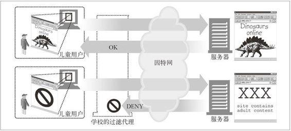
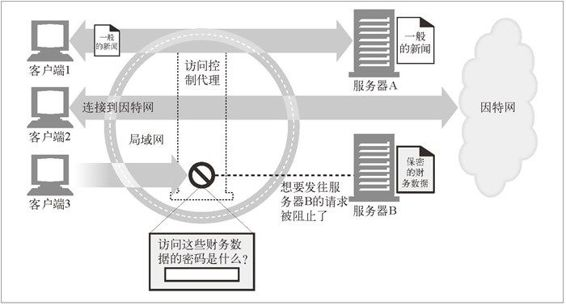
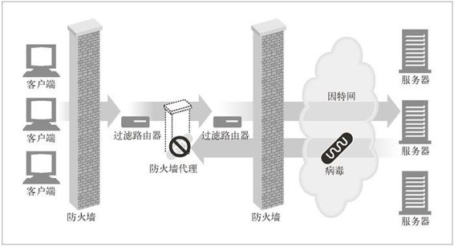
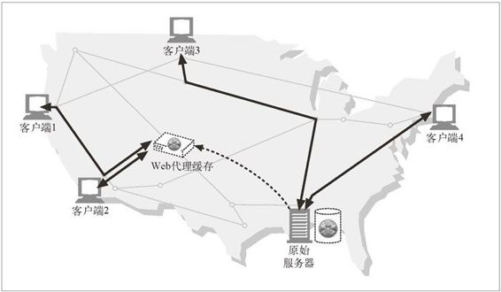
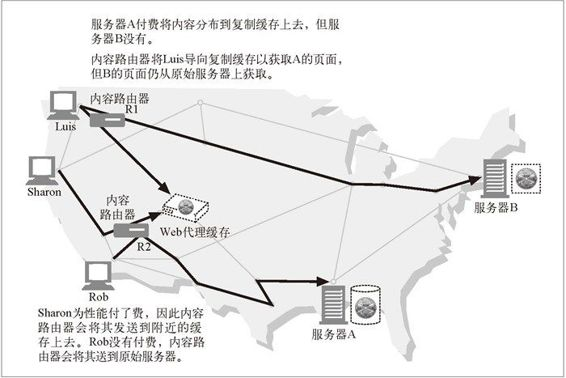
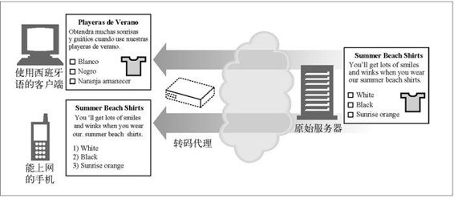
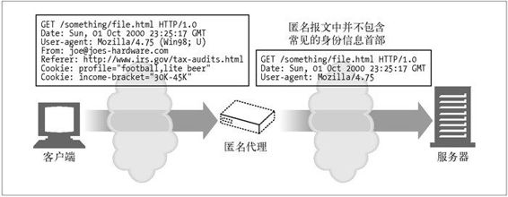

6.2 为什么使用代理
代理服务器可以实现各种时髦且有用的功能。它们可以改善安全性，提高性能，节省费用。代理服务器可以看到并接触到所有流过的 HTTP 流量，所以代理可以监视流量并对其进行修改，以实现很多有用的增值 Web 服务。这里给出了几种代理使用方法的示例。
儿童过滤器
小学在为教育站点提供无阻碍访问的同时，可以利用过滤器代理来阻止学生访问成人内容。如图 6-3 所示，代理应该允许学生无限制地访问教育性内容，但对不适合儿童的站点要强行禁止访问。1
1 有些公司和非营利性组织提供了过滤软件，维护了一些“黑名单”，以识别并限制对危害性内容的访问。
文档访问控制
可以用代理服务器在大量 Web 服务器和 Web 资源之间实现统一的访问控制策略，创建审核跟踪机制。这在大型企业环境或其他分布式机构中是很有用的。
在集中式代理服务器上可以对所有访问控制功能进行配置，而无需在众多由不同组织管理、不同厂商制造、使用不同模式的 Web 服务器上进行经常性的访问控制升级。2
2 为防止一些经验丰富的用户蓄意绕过控制代理，可以静态地配置 Web 服务器，使其仅接受来自代理服务器的请求。

图 6-3 代理应用程序实例：儿童安全的因特网过滤器
在图 6-4 中，集中式访问控制代理：
允许客户端 1 无限制地访问服务器 A 的新闻页面；
客户端 2 可以无限制地访问因特网；
在允许客户端 3 访问服务器 B 之前，要求其输入口令。

图 6-4 代理应用程序实例：集中式文档访问控制
安全防火墙
网络安全工程师通常会使用代理服务器来提高安全性。代理服务器会在网络中的单一安全节点上限制哪些应用层协议的数据可以流入或流出一个组织。还可以提供用来消除病毒的 Web 和 E-mail 代理使用的那种挂钩程序，以便对流量进行详细的检查（参见图 6-5）。

图 6-5 代理应用程序实例：安全防火墙
Web 缓存
代理缓存维护了常用文档的本地副本，并将它们按需提供，以减少缓慢且昂贵的因特网通信。
在图 6-6 中，客户端 1 和客户端 2 会去访问附近 Web 缓存上的对象 A，而客户端 3 和客户端 4 访问的则是原始服务器上的文档。

图 6-6 代理应用程序实例：Web 缓存
反向代理
代理可以假扮 Web 服务器。这些被称为替代物（surrogate）或反向代理（reverse proxy）的代理接收发给 Web 服务器的真实请求，但与 Web 服务器不同的是，它们可以发起与其他服务器的通信，以便按需定位所请求的内容。
可以用这些反向代理来提高访问慢速 Web 服务器上公共内容时的性能。在这种配置中，通常将这些反向代理称为服务器加速器（server accelerator）（参见图 6-7）。还可以将替代物与内容路由功能配合使用，以创建按需复制内容的分布式网络。
图 6-7 代理应用程序实例：（服务器加速器实现方式中的）替代物
内容路由器
代理服务器可以作为“内容路由器”使用，根据因特网流量状况以及内容类型将请求导向特定的 Web 服务器。
内容路由器也可以用来实现各种服务级的请求。比如，如果用户或内容提供者付费要求提供更高的性能，内容路由器可以将请求转发到附近的复制缓存（参见图 6-8），或者如果用户申请了过滤服务，还可以通过过滤代理来转发 HTTP 请求。可以用自适应内容路由代理来构建很多有趣的服务。

图 6-8 代理应用程序实例：内容路由器
转码器
代理服务器在将内容发送给客户端之前，可以修改内容的主体格式。在这些数据表示法之间进行的透明转换被称为转码（transcoding）。3
3 有些人会对“转码”和“翻译”进行区分，将转码定义为对数据编码进行的相对简单的转换（比如无损压缩），将翻译定义为更重要的、对数据的重新格式化或语义转换。我们用术语转码来表示所有在中间实体上对内容进行的修改。
转码代理可以在传输 GIF 图片时，将其转换成 JPEG 图片，以减小尺寸。也可以对图片进行压缩，或降低颜色的色彩饱和度以便在电视上观看。同样，可以对文本文件进行压缩，并为能够使用因特网的呼机和智能手机生成小型的文本摘要 Web 页面。代理甚至可以在传输文档的过程中将其转换成外语。
图 6-9 显示了一个转码代理，这个代理可以将英语文本转换成西班牙语文本，将 HTML 页面重新格式化为较简单的文本，以便显示在手机的小屏幕上。

图 6-9 代理应用程序实例：内容转码器
匿名者
匿名者代理会主动从 HTTP 报文中删除身份特性（比如客户端 IP 地址、From 首部、Referer 首部、cookie、URI 的会话 ID），从而提供高度的私密性和匿名性。4
4 但是，由于删除了识别信息，用户浏览体验的质量可能会有所下降，有些 Web 站点可能会无法正常工作。
在图 6-10 中，匿名代理会对用户报文进行下列修改以增加私密性。

图 6-10 代理应用程序实例：匿名者
从 User-Agent 首部删除用户的计算机与 OS 类型。
删除 From 首部以保护用户的 E-mail 地址。
删除 Referer 首部来掩盖用户访问过的其他站点。
删除 Cookie 首部以剔除概要信息和身份的数据。